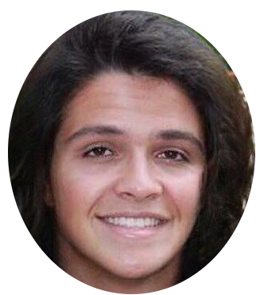

 A propos
A propos
 Se Connecter
Se Connecter
 S'inscrire
Profil
S'inscrire
Profil
Bienvenue sur notre bijou, qu'est ToLove Université !
Ahah vous avez atterri sur ToLove Université par hasard ? Non c'est impossible, ceci est votre destinée, c'est le
destin et votre inconscient qui vous a amené ici. Vous êtes un humain ? un non-binaire ? hétéro ? bi ? Tout le monde est
accepté ici! Ce n'est pas un site de rencontre comme les autres, ici c'est la maison du bonheur qui vous ouvre ses portes.
Vous allez être béni et émerveillé par cette incroyable découverte, ce lieu sera votre recueil, vous avez nul part ou aller ?
My house is your house.
Ici vous allez trouver avec 100% de chance votre âme-soeur. vous avez entre 18 et 100 ans ? Alors vous êtes bien tombé,
trouver l'amour vrai est difficile de nos jours mais rien n'est impossible. Nous-même, Wassim et Yann, mettons notre réputation
de charo à l'épreuve ! Vous allez p e c h o, sans aucun soucis.
Bien sûr ce site, peut tout a fait être utilisé comme moyen de communication lambda entre étudiants de la fac, vous voulez
partagez votre passion avec d'autre étudiants ? Vous avez peur de parler aux gens et faire connaissance ? alors passez par
ToLove Université pour réaliser votre souhait. Ce n'est que le debut de votre périple mais ne vous inquiétez pas, cette aventure s'avère
incroyable en émotions et en rebondissement, alors lancez vous jeunes, n'ayez pas peur et deployez vos ailes !
Mais avant tout, c'est un service que nous rendons à nos camarades présents en filière IE. En effet, il y a une surreprésentation des hommes, et nos espoirs de trouver l'amour s'en retrouvent annhiliés.
(sauf si les hommes vous intéressent, bien sur :D). Bien qu'il soit questionnable de savoir pourquoi cette inégalité, ce site est notre réponse aux difficultés de nos confrères informaticiens, afin que chacun aie ses chances de trouver l'âme soeur.
Ce site a été développé avec amour et passion par Yann Trou et Wassim Djellat.
Le logo est fait maison, les icônes proviennent de Font Awesome, les polices utilisées sont DinoMiko par 7Nfont et vous ne devinerez jamais qui est cette belle jeune femme.